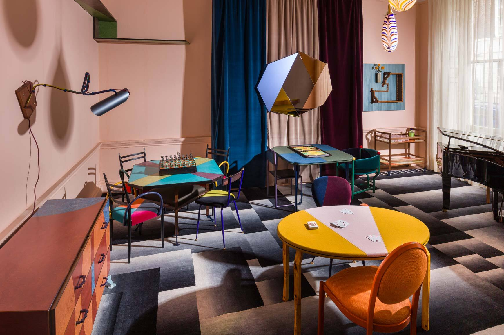
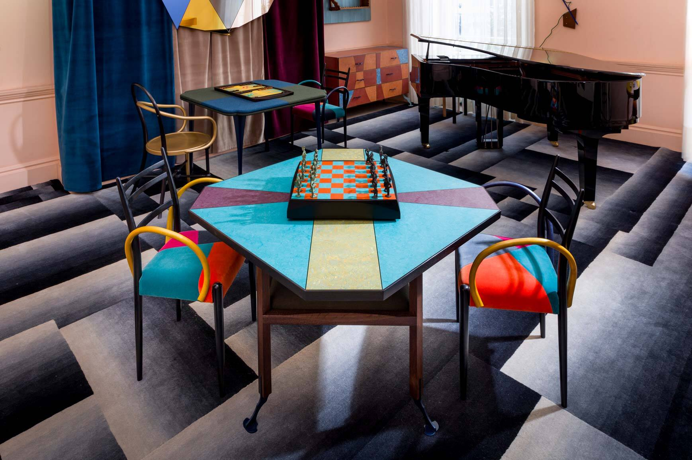
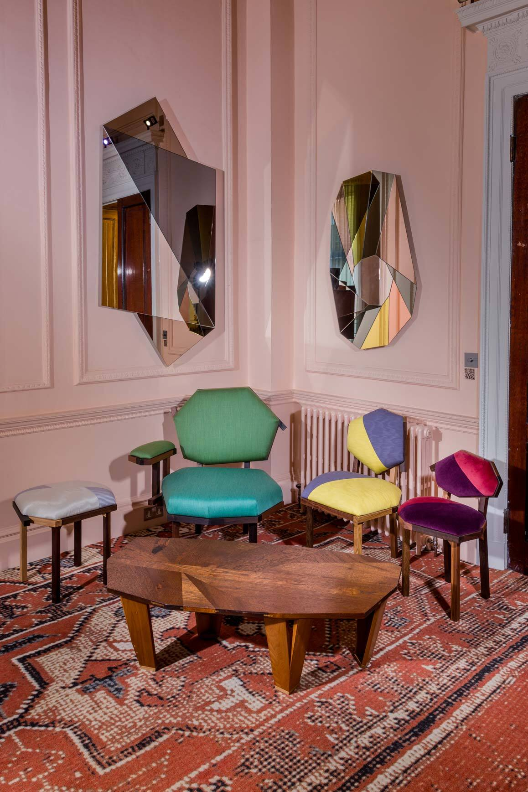
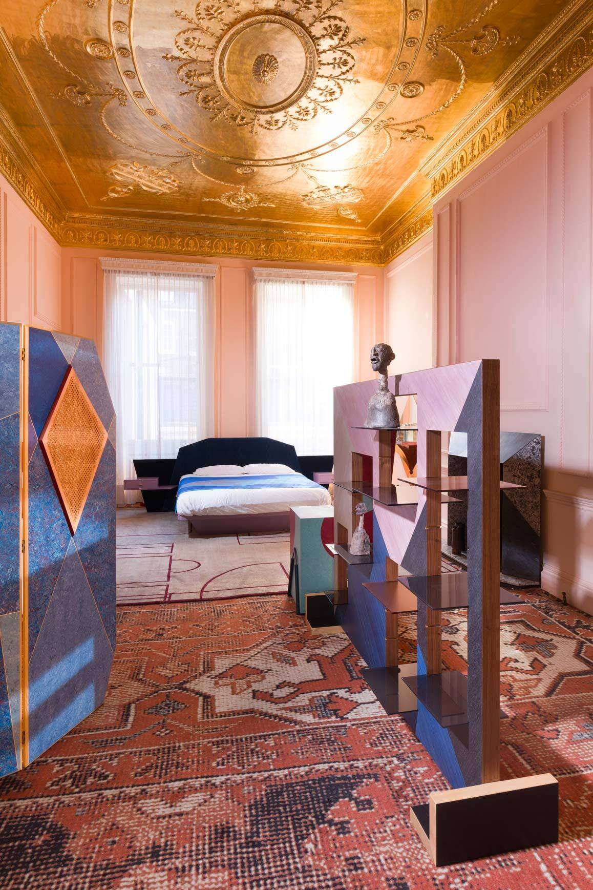
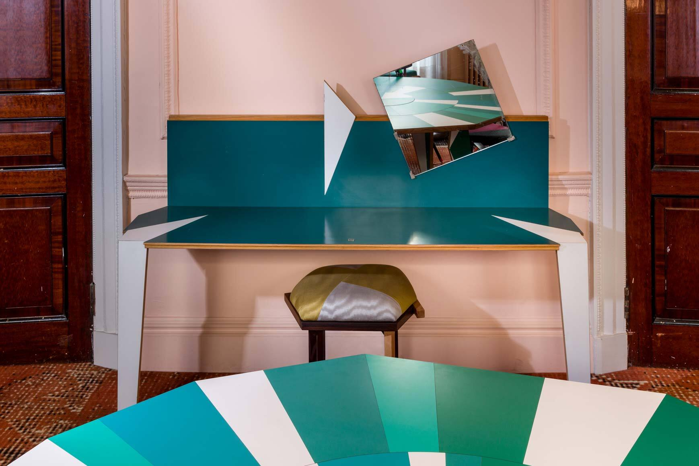

I assisted Martino Gamper OBE & Angus Mills in the setup, packdown & photoshoot for his show titled 'Before, After & Beyond' during London Frieze Week 2024. I helped with setting up a large majority of the exhibition, building furniture, placing it in the set, and photo assisting Angus during each of the shoot days.
In total I worked this project for the full one month duration of the show.
    